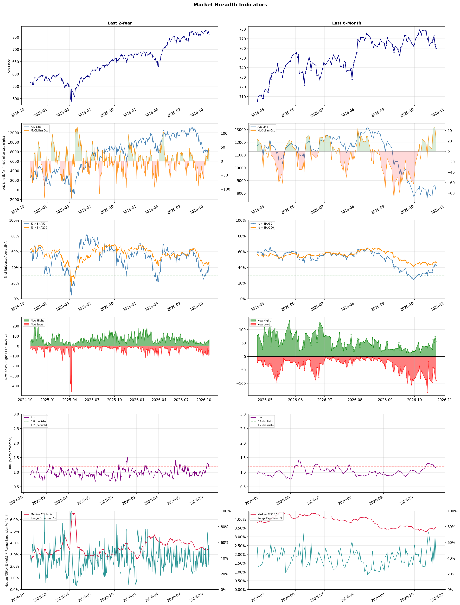

A daily market breadth and sector rotation report for active investors
| Item | Read |
|---|---|
| Regime | Defensive |
| Risk posture | Defensive |
| Universe | 1,315 stocks tracked · 57 new 52-week highs · 30 active swing setups |
| Breadth | only 42.5% of tracked stocks are above SMA50, new lows exceed new highs (90 vs 57) |
| Leadership | Oil & Gas Refining & Marketing, Oil & Gas Integrated, and Oil & Gas E&P |
| Weakest groups | Uranium, Electrical Equipment & Parts, and Other Industrial Metals & Mining |
Use this report to prioritize research and chart review; validate entries, stops, liquidity, earnings, and risk before acting.
| Item | Read |
|---|---|
| Primary read | Defensive regime with Defensive risk posture. |
| Research queue | MPC, PSX, DINO, UGP, CSAN |
| Leadership focus | Oil & Gas Refining & Marketing, Oil & Gas Integrated, and Oil & Gas E&P |
| Caution list | Uranium, Electrical Equipment & Parts, and Other Industrial Metals & Mining |
| Review prompt | Check extension risk, chart location, fundamentals, valuation, and earnings before using any research row. |
| Item | Read |
|---|---|
| Primary read | 4 active risk warnings; use screen output as watchlist input only. |
| Bullish screens | AMPL, DOCU, FRSH, ARHS, BBY |
| Bearish screens | EVGO, KEP, CIFR, WYFI, APP |
| Alerts / levels | Automated trigger, stop, ATR, liquidity, reward/risk, and event-risk levels are pending future enrichment. |
| Review prompt | Open the linked chart, define trigger and invalidation, then check liquidity and event risk independently. |
Risk Posture: Defensive — screen backdrop favors caution; require independent risk review before new exposure
Metric context: McClellan below -50 = elevated selling pressure; below -100 = washout territory. Range Expansion = share of stocks with daily range above their 20-day average. Signal Density = share of tracked names appearing in signal screens.
| Breadth Date | % > SMA50 | % > SMA200 | New Highs | New Lows | McClellan | Median Range | Avg Range | Median ATR14 | Range Expansion | Signal Density |
|---|---|---|---|---|---|---|---|---|---|---|
| 2026-10-23 | 42.5% | 46.0% | 57 | 90 | 22.5 | 3.2% | 3.7% | 3.5% | 41.9% | 6.2% |

Prior comparison date: October 22, 2026
| Metric | Prior | Current | Change |
|---|---|---|---|
| Regime | Defensive | Defensive | unchanged |
| Risk Posture | Defensive | Defensive | unchanged |
| % > SMA50 | 43.9% | 42.5% | -1.4 pts |
| % > SMA200 | 47.1% | 46.0% | -1.1 pts |
| New Highs | 75 | 57 | -18 |
| New Lows | 76 | 90 | -14 |
Top-10 industries entering: Apparel Manufacturing and Financial Data & Stock Exchanges. Top-10 industries leaving: Apparel Retail and Healthcare Plans. New multi-signal long setups: CART, DOCU, EBC. New multi-signal short setups: APP, ASPI, AVTX, CBRE, CDE, CIFR, EVGO.
| Status | Tickers | Read |
|---|---|---|
| Added | APP, ASPI, AVTX, CART, CBRE, CDE, CIFR, DOCU | New technical screen matches vs prior report. |
| Removed | ADP, AEE, AEP, BDX, BRZE, ED, EXEL, FIGS | No longer present in today's technical screen matches. |
| Still Active | AMPL, ARHS, AVPT, BBY, BOX, CTAS, DXC, GMAB | Appeared in both current and prior reports. |
| Promoted | none | Model Screen Score improved by at least 15 points. |
| Downgraded | none | Model Screen Score declined by at least 15 points. |
| Direction | Industry | ETF | Prior Rank | Current Rank | Days | Rank Change |
|---|---|---|---|---|---|---|
| Rose | Apparel Manufacturing | N/A | 84 | 10 | 42 | +74 |
| Rose | Restaurants | N/A | 84 | 25 | 28 | +59 |
| Rose | REIT - Hotel & Motel | XLRE | 59 | 7 | 35 | +52 |
| Rose | Leisure | N/A | 83 | 34 | 35 | +49 |
| Rose | Building Products & Equipment | XHB | 81 | 33 | 42 | +48 |
Bull: The Apparel Manufacturing sector is experiencing rising relative strength due to favorable industry trends driven by a shift in trade dynamics and sourcing strategies, particularly as highlighted in recent headlines discussing the revival of the sector through trade deals and a pivot away from reliance on China. Additionally, the positive outlook for 2026, as noted by multiple financial sources, suggests that companies within this sector are well-positioned to capitalize on emerging consumer preferences and market opportunities, further enhancing their growth potential.
Bear: While the apparel manufacturing sector may currently exhibit rising relative strength, this optimism overlooks significant headwinds that could undermine long-term growth. The shift away from China could lead to increased production costs and supply chain disruptions as companies scramble to establish new sourcing strategies, potentially eroding margins. Additionally, the industry's reliance on consumer discretionary spending makes it vulnerable to economic downturns, which could dampen demand and negate the purported benefits of favorable trade dynamics.
Verdict: The apparel manufacturing sector's rising relative strength is primarily driven by a strategic pivot away from China, allowing companies to diversify their supply chains and capitalize on new trade agreements that enhance growth potential. However, the key risk lies in the potential for increased production costs and supply chain disruptions as firms adapt to these changes, which could undermine profit margins and expose the industry to economic downturns that affect consumer spending. Investors should closely monitor these dynamics while considering opportunities in companies that effectively navigate these challenges.
Sources: Google News
Bull: The restaurant industry is experiencing a rising relative strength due to a combination of resilient consumer spending and strategic positioning by key players, as highlighted by the positive outlook in the ETF analysis from The Motley Fool. Despite recent downgrades for specific stocks like Chipotle, the overall sector remains attractive, with companies like Darden Restaurants (DRI) outperforming the broader consumer discretionary sector, indicating strong operational performance and consumer demand. Additionally, the trend towards tokenization and innovative investment strategies in the restaurant space may further enhance investor interest and confidence in the sector's growth potential.
Bear: While the restaurant industry may currently show rising relative strength, this trend could be misleading due to underlying economic pressures such as inflation and rising labor costs, which are squeezing profit margins across the sector. The downgrades for major players like Chipotle and the slip in stocks of McDonald's and Yum! Brands suggest that not all companies are equally resilient, and consumer spending may not be sustainable in the face of potential economic downturns. Furthermore, the excitement around tokenization and innovative investment strategies may not translate into tangible growth for the industry, as these trends can often be speculative and do not address fundamental operational challenges.
Verdict: The restaurant industry's rising relative strength is primarily driven by resilient consumer spending and strategic positioning by key players, such as Darden Restaurants, which are outperforming the broader consumer discretionary sector. However, the key risk lies in the potential economic pressures from inflation and rising labor costs, which could undermine profit margins and consumer spending sustainability, making it crucial for investors to closely monitor these economic indicators moving forward.
Sources: Google News
Bull: The REIT - Hotel & Motel sector is experiencing rising relative strength primarily due to a robust recovery in travel and hospitality demand post-pandemic, as highlighted by positive coverage from sources like Morningstar and The Motley Fool, which identify top-performing hospitality REITs for the coming years. Additionally, companies like Summit Hotel Properties and Host Hotels & Resorts are likely benefiting from increased occupancy rates and rising room prices, driven by a resurgence in both leisure and business travel, further solidifying investor confidence in the sector's growth potential.
Bear: While the current narrative highlights a recovery in travel and hospitality demand, it overlooks several critical headwinds facing the hotel and motel REIT sector. Rising interest rates and inflation could significantly increase borrowing costs and operational expenses, squeezing profit margins. Additionally, the potential for an economic downturn or recession could dampen both leisure and business travel demand, leading to increased vacancy rates and downward pressure on room prices, ultimately undermining the bullish outlook for these REITs.
Verdict: The REIT - Hotel & Motel sector's rising strength is fundamentally driven by a robust recovery in travel demand, with increased occupancy rates and higher room prices bolstering investor confidence in leading companies like Summit Hotel Properties and Host Hotels & Resorts. However, key risks remain, particularly from rising interest rates and inflation, which could elevate operational costs and dampen profitability, especially if an economic downturn curtails travel demand. Investors should closely monitor these macroeconomic indicators while considering positions in this sector.
Sources: Google News
Bull: The Leisure industry is experiencing a rise in relative strength primarily due to a robust recovery in travel and tourism as consumer demand rebounds post-pandemic, as highlighted by articles discussing growth opportunities in travel and tourism stocks for 2026. Additionally, the mention of "4 Leisure Stocks Offering Growth Amid Industry Pressures" suggests that despite cyclical headwinds, select companies within the sector are demonstrating resilience and potential for profitability, driven by increased consumer spending on leisure activities and a shift toward experiential spending. This positive sentiment is further supported by performance comparisons of major players like Airbnb against traditional competitors, indicating a dynamic market landscape favoring innovative leisure solutions.
Bear: While the bull thesis highlights a recovery in travel and tourism, it underestimates the cyclical nature of the leisure industry, which is vulnerable to economic downturns and inflationary pressures that can dampen consumer spending. Additionally, the mention of "industry pressures" in multiple headlines suggests that underlying challenges such as rising operational costs, labor shortages, and potential regulatory changes could significantly impact profitability, making the current optimism appear overly optimistic in the face of these persistent headwinds.
Verdict: The leisure industry's current rise can be fundamentally attributed to a strong recovery in travel and tourism as consumer demand rebounds post-pandemic, with increased spending on experiences driving growth for select companies. However, investors should remain cautious of the cyclical vulnerabilities and potential inflationary pressures that could dampen consumer spending, alongside operational challenges that may hinder profitability in the long term. Therefore, while opportunities exist, a careful assessment of individual companies' resilience to these risks is essential before making investment decisions.
Sources: Google News
Bull: The Building Products & Equipment sector is experiencing rising relative strength primarily due to a robust outlook for construction and infrastructure investment, as highlighted in recent analyses identifying top construction stocks for 2026. Factors such as increasing demand for residential and commercial construction, along with the ongoing recovery in the housing market, are driving investor interest, as seen in articles discussing the best stocks in the sector. Additionally, the focus on innovative construction solutions and equipment, as mentioned in the comparisons between companies like Johnson Controls and installed building products, further underscores the sector's potential for growth amidst broader economic recovery trends.
Bear: While the bullish perspective highlights a robust outlook for construction and infrastructure investment, it overlooks significant headwinds that could dampen growth in the Building Products & Equipment sector. Rising interest rates and persistent inflation are likely to constrain consumer spending and increase borrowing costs, which may lead to a slowdown in residential and commercial construction projects. Furthermore, the industry's reliance on cyclical demand could expose it to volatility, especially if economic conditions worsen or if supply chain disruptions continue to impact production and costs.
Verdict: The Building Products & Equipment sector is likely experiencing rising relative strength due to a favorable construction and infrastructure investment outlook, driven by increasing demand in both residential and commercial markets. However, investors should remain cautious of key risks, particularly rising interest rates and inflation, which could dampen consumer spending and slow down construction activity, potentially leading to increased volatility in the sector.
Sources: Google News
| Direction | Industry | ETF | Prior Rank | Current Rank | Days | Rank Change |
|---|---|---|---|---|---|---|
| Fell | Electronic Components | XLK | 8 | 81 | 28 | -73 |
| Fell | Semiconductor Equipment & Materials | SOXX | 9 | 77 | 28 | -68 |
| Fell | Agricultural Inputs | N/A | 6 | 73 | 42 | -67 |
| Fell | Capital Markets | KCE | 9 | 74 | 35 | -65 |
| Fell | Semiconductors | SOXX | 7 | 67 | 28 | -60 |
Bear: While the bull analyst attributes the sector's relative weakness to broader market dynamics and the performance of select companies, this overlooks the fundamental challenges facing the Electronic Components industry as a whole. The mixed earnings reports indicate not just isolated struggles but a broader trend of declining demand and pricing pressures exacerbated by rising competition and supply chain constraints. Additionally, the focus on memory stocks may signal a shift in investor sentiment away from traditional electronic components, suggesting that the sector may face prolonged headwinds as innovation and growth opportunities dwindle.
Bull: The relative weakness in the Electronic Components sector may be attributed to broader market dynamics, particularly the surge in memory stocks, which are currently capturing investor attention as the "hottest trade" in the tech sector, as noted by Business Insider. Additionally, while companies like Amphenol are performing well, the overall industry sentiment may be dampened by mixed earnings reports and competitive pressures highlighted in recent analyses, such as those from Zacks and Yahoo Finance, which suggest that while some firms excel, others are struggling to keep pace, leading to a lack of cohesive strength across the sector.
Verdict: The Electronic Components industry is experiencing a downturn primarily due to declining demand and pricing pressures, compounded by heightened competition and supply chain constraints. While some companies like Amphenol are performing well, the overall mixed earnings reports reflect a lack of cohesive strength in the sector, indicating that investors may be shifting their focus to more lucrative opportunities like memory stocks. The key risk lies in the potential for prolonged headwinds if innovation and growth opportunities within the industry continue to diminish.
Sources: Google News
Bear: While the bull analyst attributes the recent declines in the Semiconductor Equipment & Materials sector to supply constraints and profit-taking, a deeper analysis reveals that these issues may signal a more fundamental weakness in demand for semiconductor equipment. The uncertainty surrounding the chip equipment outlook suggests that the market may be anticipating a prolonged downturn in semiconductor demand, driven by factors such as inventory corrections, geopolitical tensions, and potential shifts in consumer behavior, which could lead to further declines in stock prices beyond just profit-taking.
Bull: The recent decline in the Semiconductor Equipment & Materials sector's relative strength is primarily driven by supply constraints and an uncertain outlook for chip equipment, as highlighted by the significant drops in stocks like Lam Research and Applied Materials. These supply issues, coupled with profit-taking after a strong performance throughout the year, have led to a negative sentiment in the market, causing widespread selling pressure across the sector.
Verdict: The recent decline in the Semiconductor Equipment & Materials sector is primarily attributed to supply constraints and profit-taking after a strong performance, but it also raises concerns about a potential fundamental weakness in demand for semiconductor equipment. Key risks from the bear case include the possibility of prolonged downturns in semiconductor demand due to inventory corrections and geopolitical tensions, which could lead to further declines in stock prices. Investors should closely monitor demand indicators and geopolitical developments to assess the sustainability of the sector's recovery.
Sources: Google News
Bear: While the bull analyst attributes the Agricultural Inputs sector's decline to broader economic concerns and El Niño's potential impacts, it’s crucial to recognize that these factors could lead to a more sustained downturn in demand for agricultural inputs. The ongoing volatility in commodity prices, exacerbated by geopolitical tensions and supply chain disruptions, could further depress margins for companies in this sector, making it increasingly difficult for them to maintain profitability. Additionally, as consumers shift towards more sustainable practices, traditional agricultural inputs may face long-term headwinds from regulatory changes and evolving market preferences, undermining any short-term opportunities highlighted by bullish analysts.
Bull: The Agricultural Inputs sector is experiencing a decline in relative strength primarily due to broader economic concerns impacting materials and commodities, as highlighted by Seeking Alpha's note on the economically sensitive materials sector breaking out. Additionally, the focus on El Niño's potential impacts on agricultural yields, as mentioned in Investing.com, may have created uncertainty around crop production and input demand, leading to a cautious sentiment among investors. This backdrop, coupled with Morningstar's observation of the sector's underperformance relative to other materials, suggests that while there are opportunities within agriculture, the prevailing macroeconomic factors are currently weighing on its relative strength.
Verdict: The Agricultural Inputs sector's decline is fundamentally driven by macroeconomic pressures, including volatility in commodity prices and investor caution stemming from potential El Niño impacts on crop yields. The key risk from the bear case lies in the sustained downturn in demand due to ongoing geopolitical tensions and a shift towards sustainable agricultural practices, which could further compress margins and profitability for companies in this sector. Investors should remain vigilant about these broader economic factors and consider the long-term implications of changing market dynamics on agricultural inputs.
Sources: Google News
Bear: While the bull analyst attributes the decline in the Capital Markets sector primarily to the sell-off in AI stocks and a shift towards tech investments, this overlooks broader macroeconomic headwinds that are likely to persist. Rising oil prices can lead to increased inflationary pressures, which may prompt central banks to tighten monetary policy further, creating a less favorable environment for capital markets. Additionally, the ongoing geopolitical tensions and potential economic slowdown in key regions could dampen investor confidence, leading to sustained capital outflows from the sector despite any short-term shifts in investor focus.
Bull: The Capital Markets sector is likely experiencing a decline in relative strength due to the sharp sell-off in AI stocks, which has created a risk-averse environment among investors, leading to reduced capital flows into broader market segments, including capital markets. Additionally, the headlines indicate a significant shift of global capital back into the tech sector, particularly in Asia, as investors seek opportunities in undervalued stocks, which may divert attention and resources away from capital markets, further exacerbating its relative weakness.
Verdict: The decline in the Capital Markets sector is primarily driven by a risk-averse sentiment among investors following the sharp sell-off in AI stocks, which has redirected capital flows towards undervalued tech opportunities in Asia. However, the key risk lies in persistent macroeconomic headwinds, such as rising oil prices and geopolitical tensions, which could exacerbate inflation and prompt central banks to tighten monetary policy, further dampening investor confidence in capital markets. Investors should remain cautious and monitor these macroeconomic indicators closely while considering potential opportunities in the tech sector.
Sources: Google News
Bear: While the bull analyst attributes the semiconductor sector's decline to supply chain issues and competitive pressures, it's critical to recognize that these challenges are symptomatic of deeper, structural weaknesses in demand and profitability within the industry. The recent sell-off, particularly among major players like AMD and Intel, signals not just temporary jitters but a potential long-term shift in market dynamics, as companies may struggle to maintain margins amidst rising competition and escalating costs. Furthermore, the ongoing geopolitical tensions and regulatory hurdles, especially concerning China, could further destabilize the sector, leading to a prolonged downturn rather than a mere correction.
Bull: The semiconductor sector is experiencing a decline in relative strength primarily due to heightened concerns over supply chain issues and competitive pressures, particularly from China. Recent headlines highlight significant sell-offs driven by warnings about supply constraints and jitters surrounding AI spending, which have negatively impacted key players like AMD and Intel. Additionally, fears of intensified competition from companies like Samsung and SK Hynix further exacerbate the sector's challenges, contributing to the overall bearish sentiment.
Verdict: The semiconductor industry's decline is fundamentally driven by a confluence of supply chain disruptions and intensified competitive pressures, particularly from Chinese firms, which are raising concerns about long-term profitability and market dynamics. The key risk highlighted by the bear thesis is that these challenges may reflect deeper structural weaknesses in demand, potentially leading to sustained margin compression and a prolonged downturn in the sector. Investors should closely monitor geopolitical developments and regulatory changes that could further impact the industry's stability and growth prospects.
Sources: Google News
| Industry | Rank | ETF | 7d | 14d | 28d | 42d | Chg 42d | Size | 20D | 60D | Composite | Active Setups |
|---|---|---|---|---|---|---|---|---|---|---|---|---|
| Oil & Gas Refining & Marketing | 1 | CRAK | 1 | 1 | 1 | 1 | 0 | 7 | 10.1% | 26.6% | 0.973 | 0 |
| Oil & Gas Integrated | 2 | XLE | 2 | 6 | 4 | 2 | 0 | 10 | 12.9% | 17.0% | 0.939 | 0 |
| Oil & Gas E&P | 3 | XOP | 6 | 25 | 27 | 3 | 0 | 26 | 14.8% | 18.5% | 0.938 | 1 |
| Household & Personal Products | 4 | XLP | 3 | 9 | 26 | 21 | +17 | 12 | 11.0% | 14.0% | 0.905 | 0 |
| Insurance Brokers | 5 | N/A | 12 | 41 | 33 | 33 | +28 | 6 | 10.3% | 15.2% | 0.892 | 0 |
| Health Information Services | 6 | N/A | 10 | 2 | 3 | 7 | +1 | 12 | 5.5% | 41.6% | 0.863 | 0 |
| REIT - Hotel & Motel | 7 | XLRE | 7 | 8 | 30 | 43 | +36 | 9 | 9.9% | 2.4% | 0.860 | 0 |
| Discount Stores | 8 | XRT | 4 | 7 | 15 | 38 | +30 | 7 | 7.2% | 7.1% | 0.851 | 0 |
| Financial Data & Stock Exchanges | 9 | N/A | 9 | 22 | 44 | 19 | +10 | 7 | 10.9% | 7.7% | 0.850 | 1 |
| Apparel Manufacturing | 10 | N/A | 8 | 26 | 52 | 84 | +74 | 6 | 17.1% | 8.7% | 0.847 | 0 |
Rank columns (7d–42d) show the industry's rank that many trading days ago — lower is stronger. Chg 42d = rank change vs 42 trading days ago — positive means the industry moved up. 20D and 60D are the mean stock return within the industry over that period. Active Setups: count of today's swing-trade candidates from this industry appearing across all signal screens.
| Industry | Rank | ETF | 7d | 14d | 28d | 42d | Chg 42d | Size | 20D | 60D | Composite | Active Setups |
|---|---|---|---|---|---|---|---|---|---|---|---|---|
| Uranium | 87 | URA | 87 | 83 | 82 | 64 | -23 | 6 | -20.7% | -24.1% | 0.031 | 0 |
| Electrical Equipment & Parts | 86 | XLI | 86 | 71 | 49 | 80 | -6 | 12 | -26.3% | -29.9% | 0.034 | 0 |
| Other Industrial Metals & Mining | 85 | N/A | 80 | 79 | 66 | 56 | -29 | 21 | -23.4% | -19.5% | 0.050 | 0 |
| Resorts & Casinos | 84 | N/A | 79 | 85 | 86 | 75 | -9 | 6 | -10.6% | -26.9% | 0.093 | 0 |
| Gambling | 83 | N/A | 85 | 86 | 87 | 39 | -44 | 5 | -8.6% | -20.3% | 0.107 | 0 |
| Aerospace & Defense | 82 | ITA | 83 | 77 | 58 | 79 | -3 | 26 | -19.8% | -17.7% | 0.110 | 0 |
| Electronic Components | 81 | XLK | 72 | 13 | 8 | 51 | -30 | 10 | -23.4% | -15.5% | 0.111 | 0 |
| Utilities - Renewable | 80 | N/A | 82 | 80 | 63 | 72 | -8 | 6 | -21.8% | -26.0% | 0.117 | 0 |
| REIT - Mortgage | 79 | N/A | 84 | 87 | 83 | 61 | -18 | 11 | -9.4% | -19.5% | 0.130 | 0 |
| Auto Parts | 78 | N/A | 68 | 64 | 43 | 54 | -24 | 19 | -13.3% | -16.8% | 0.148 | 1 |
Rank columns (7d–42d) show the industry's rank that many trading days ago — lower is stronger. Chg 42d = rank change vs 42 trading days ago — positive means the industry moved up. 20D and 60D are the mean stock return within the industry over that period. Active Setups: count of today's swing-trade candidates from this industry appearing across all signal screens.
These are research candidates from top-ranked stocks, capped at five names per industry to avoid over-concentration. Returns shown (60D, 120D, 250D) are historical — they reflect where prices have already moved, not forward expectations. Extension Risk flags names that may require extra patience or a better entry point. They are not buy signals.
Chart: TV = TradingView chart (opens in browser); PDF = local chart file (if downloaded).
| Ticker | Name | Industry | Industry Rank | Market Cap | 60D Hist | 120D Hist | 250D Hist | Extension Risk | Research Reason | Chart |
|---|---|---|---|---|---|---|---|---|---|---|
| MPC | Marathon Petroleum | Oil & Gas Refining & Marketing | 1 | N/A | 46.0% | 82.2% | 136.9% | Constructive | Top-ranked in industry | TV |
| PSX | Phillips 66 | Oil & Gas Refining & Marketing | 1 | N/A | 35.2% | 60.7% | 116.0% | Constructive | Top-ranked in industry | TV |
| DINO | HF Sinclair | Oil & Gas Refining & Marketing | 1 | N/A | 32.4% | 71.7% | 130.3% | Constructive | Top-ranked in industry | TV |
| UGP | Ultrapar Participacoes | Oil & Gas Refining & Marketing | 1 | N/A | 23.4% | 33.3% | 105.9% | Constructive | Top-ranked in industry | TV |
| CSAN | Cosan | Oil & Gas Refining & Marketing | 1 | N/A | 9.5% | 9.5% | 9.5% | Constructive | Top-ranked in industry | TV |
| PBR | Petroleo Brasileiro SA Petrobras | Oil & Gas Integrated | 2 | N/A | 40.8% | 23.3% | 132.5% | Constructive | Top-ranked in industry | TV |
| EQNR | Equinor | Oil & Gas Integrated | 2 | N/A | 21.0% | 20.5% | 111.6% | Constructive | Top-ranked in industry | TV |
| SU | Suncor Energy | Oil & Gas Integrated | 2 | N/A | 19.7% | 17.3% | 103.5% | Constructive | Top-ranked in industry | TV |
| BP | BP PLC | Oil & Gas Integrated | 2 | N/A | 17.5% | 11.9% | 56.2% | Constructive | Top-ranked in industry | TV |
| XOM | Exxon Mobil | Oil & Gas Integrated | 2 | N/A | 17.5% | 20.8% | 63.4% | Constructive | Top-ranked in industry | TV |
| APA | Apache | Oil & Gas E&P | 3 | N/A | 43.6% | 25.0% | 124.0% | Constructive | Top-ranked in industry | TV |
| NOG | Northern Oil & Gas | Oil & Gas E&P | 3 | N/A | 38.3% | 10.1% | 41.9% | Constructive | Top-ranked in industry | TV |
| BTE | Baytex Energy | Oil & Gas E&P | 3 | N/A | 29.5% | 8.1% | 132.6% | Constructive | Top-ranked in industry | TV |
| OVV | Ovintiv | Oil & Gas E&P | 3 | N/A | 17.8% | 16.0% | 96.2% | Constructive | Top-ranked in industry | TV |
| MUR | Murphy Oil | Oil & Gas E&P | 3 | N/A | 17.2% | 7.2% | 59.5% | Constructive | Top-ranked in industry | TV |
| ODD | ODDITY Tech | Household & Personal Products | 4 | N/A | 54.7% | 48.3% | -50.5% | Extended | Top-ranked in industry; extended | TV |
| ELF | e.l.f. Beauty | Household & Personal Products | 4 | N/A | 38.9% | 84.7% | -7.0% | Constructive | Top-ranked in industry | TV |
| EL | Estee Lauder | Household & Personal Products | 4 | N/A | 28.5% | 34.6% | 7.9% | Constructive | Top-ranked in industry | TV |
| COTY | Coty Inc | Household & Personal Products | 4 | N/A | 20.1% | 33.5% | -22.0% | Constructive | Top-ranked in industry | TV |
| KMB | Kimberly-Clark | Household & Personal Products | 4 | N/A | 1.2% | 18.1% | -2.6% | Constructive | Top-ranked in industry | TV |
These are technical screen matches from existing signal files. They are not trade recommendations. Trigger, stop, ATR, liquidity, reward/risk, and event risk still require separate validation until those inputs are available.
Model Screen Score is weighted by signal count, industry rank, freshness, and setup type. It is not a probability of profit, expected return, or suitability rating. Industry cap: max 3 candidates per industry.
Signal glossary: Momentum Pullback = stock in an uptrend that has pulled back 10–30% and shows re-entry conditions. MA Compression = short- and long-term moving averages converging, often preceding a directional move. Three-Day Up/Down = three consecutive closes in the same direction. New 52Wk High/Low = price reached a new annual extreme.
Chart: TV = TradingView chart (opens in browser); PDF = local chart file (if downloaded).
| Ticker | Industry | Setups | Close | Industry Rank | Signal Count | Model Screen Score | Reason | Chart |
|---|---|---|---|---|---|---|---|---|
| AMPL | Software - Application | New 52Wk High; Three-Day Up | 17.42 | 11 | 2 | 85 | Multi-signal; new-high strength | TV |
| DOCU | Software - Application | New 52Wk High; Three-Day Up | 85.27 | 11 | 2 | 85 | Multi-signal; new-high strength | TV |
| FRSH | Software - Application | New 52Wk High; Three-Day Up | 15.49 | 11 | 2 | 85 | Multi-signal; new-high strength | TV |
| ARHS | Specialty Retail | New 52Wk High; Three-Day Up | 11.70 | 12 | 2 | 85 | Multi-signal; new-high strength | TV |
| BBY | Specialty Retail | New 52Wk High; Three-Day Up | 99.87 | 12 | 2 | 85 | Multi-signal; new-high strength | TV |
| KMI | Oil & Gas Midstream | MA Compression; New 52Wk High | 34.43 | 19 | 2 | 82 | Multi-signal; new-high strength | TV |
| AVPT | Software - Infrastructure | New 52Wk High; Three-Day Up | 16.51 | 23 | 2 | 77 | Multi-signal; new-high strength | TV |
| BOX | Software - Infrastructure | New 52Wk High; Three-Day Up | 43.18 | 23 | 2 | 77 | Multi-signal; new-high strength | TV |
| DXC | Information Technology Services | New 52Wk High; Three-Day Up | 16.09 | 32 | 2 | 70 | Multi-signal; new-high strength | TV |
| HAS | Leisure | New 52Wk High; Three-Day Up | 117.44 | 34 | 2 | 70 | Multi-signal; new-high strength | TV |
| CTAS | Specialty Business Services | New 52Wk High; Three-Day Up | 224.10 | 35 | 2 | 70 | Multi-signal; new-high strength | TV |
| SSL | Specialty Chemicals | New 52Wk High; Three-Day Up | 18.03 | 39 | 2 | 70 | Multi-signal; new-high strength | TV |
| EBC | Banks - Regional | MA Compression; Three-Day Up | 22.40 | 31 | 2 | 65 | Multi-signal; compression setup | TV |
| CART | Internet Retail | New 52Wk High; Three-Day Up | 56.44 | 43 | 2 | 65 | Multi-signal; new-high strength | TV |
| GMAB | Biotechnology | New 52Wk High; Three-Day Up | 43.79 | 52 | 2 | 65 | Multi-signal; new-high strength | TV |
Bearish setups — stocks making new lows or showing persistent downside patterns. Validate carefully before acting.
| Ticker | Industry | Setups | Close | Industry Rank | Signal Count | Model Screen Score | Reason | Chart |
|---|---|---|---|---|---|---|---|---|
| EVGO | Specialty Retail | New 52Wk Low; Three-Day Down | 1.02 | 12 | 2 | 55 | Multi-signal; new-low weakness | TV |
| KEP | Utilities - Regulated Electric | New 52Wk Low; Three-Day Down | 10.59 | 26 | 2 | 40 | Multi-signal; new-low weakness | TV |
| CIFR | Information Technology Services | New 52Wk Low; Three-Day Down | 7.94 | 32 | 2 | 40 | Multi-signal; new-low weakness | TV |
| WYFI | Information Technology Services | New 52Wk Low; Three-Day Down | 9.98 | 32 | 2 | 40 | Multi-signal; new-low weakness | TV |
| APP | Advertising Agencies | New 52Wk Low; Three-Day Down | 260.25 | 38 | 2 | 40 | Multi-signal; new-low weakness | TV |
| SE | Internet Retail | New 52Wk Low; Three-Day Down | 74.63 | 43 | 2 | 35 | Multi-signal; new-low weakness | TV |
| PRIM | Engineering & Construction | New 52Wk Low; Three-Day Down | 65.03 | 50 | 2 | 35 | Multi-signal; new-low weakness | TV |
| CBRE | Real Estate Services | New 52Wk Low; Three-Day Down | 123.30 | 51 | 2 | 35 | Multi-signal; new-low weakness | TV |
| AVTX | Biotechnology | New 52Wk Low; Three-Day Down | 6.93 | 52 | 2 | 35 | Multi-signal; new-low weakness | TV |
| OLMA | Biotechnology | New 52Wk Low; Three-Day Down | 6.41 | 52 | 2 | 35 | Multi-signal; new-low weakness | TV |
| IE | Copper | New 52Wk Low; Three-Day Down | 7.86 | 61 | 2 | 25 | Multi-signal; new-low weakness | TV |
| CDE | Gold | New 52Wk Low; Three-Day Down | 13.45 | 63 | 2 | 25 | Multi-signal; new-low weakness | TV |
| FRMI | REIT - Specialty | New 52Wk Low; Three-Day Down | 2.55 | 65 | 2 | 25 | Multi-signal; new-low weakness | TV |
| UNIT | REIT - Specialty | New 52Wk Low; Three-Day Down | 5.07 | 65 | 2 | 25 | Multi-signal; new-low weakness | TV |
| ASPI | Chemicals | New 52Wk Low; Three-Day Down | 1.95 | 66 | 2 | 25 | Multi-signal; new-low weakness | TV |
How To Use This Report
| Use | Purpose |
|---|---|
| Market map | Start with breadth, regime, risk warnings, and what changed since the prior report. |
| Industry scan | Use leading, deteriorating, rising, and declining industries to focus research. |
| Research queue | Treat long-term candidates as names for deeper fundamental, valuation, and chart review. |
| Technical review | Treat bullish and bearish screen matches as watchlist inputs that require independent trigger, stop, liquidity, and event-risk checks. |
| Source follow-up | Use chart links and source files to verify raw inputs before relying on any row. |
What This Report Is Not
| Not | Meaning |
|---|---|
| Investment advice | The report does not evaluate personal objectives, risk tolerance, tax situation, account type, or suitability. |
| Buy/sell recommendation | Named tickers are research candidates or screen matches, not recommendations to transact. |
| Price target | The report does not provide fair value estimates, targets, or expected returns. |
| Trade plan | Trigger, stop, sizing, reward/risk, liquidity, and event-risk review remain separate user work. |
| Performance claim | Model Screen Score is not validated historical performance or a forecast of future results. |
| Item | Note |
|---|---|
| Version | Daily Report Methodology v1 |
| Model Screen Score | Screen-fit rank based on signal count, industry rank, freshness, and setup type. |
| Not predictive proof | The score is not expected return, probability of profit, historical validation, or suitability analysis. |
| Industry ranks | Composite industry ranks use existing daily ranking outputs and historical rank columns when available. |
| Research candidates | Long-term rows are research candidates from ranked stocks and leading industries, with historical returns labeled as historical only. |
| Technical matches | Bullish and bearish rows are screen matches requiring independent chart, trigger, stop, liquidity, and event-risk review. |
| Source | Status | Rows | Path |
|---|---|---|---|
| Market breadth | present | 1255 | breadth_20261023.csv |
| Industry composite rankings | present | 87 | all_industry_composite_20261023.csv |
| Top ranked stocks | present | 102 | top_ranked_composite_20261023.csv |
| All ranked stocks | present | 1315 | all_stocks_composite_sorted_20261023.csv |
| Top momentum pullbacks | present | 1467 | top_momentum_pullbacks_20261023.csv |
| MA compression | present | 1467 | ma_compression_stocks_20261023.csv |
| Three-day up/down | present | 308 | three_day_up_down_stocks_20261023.csv |
| New 52-week members | present | 147 | breadth_new_52wk_members_20261023.csv |
This report is generated from automated technical screens and is for informational and research purposes only. It is not investment advice, a solicitation, or a recommendation to buy or sell any security. Past performance is not indicative of future results. You are solely responsible for your own investment decisions. Consult a licensed financial advisor before acting on any information herein.